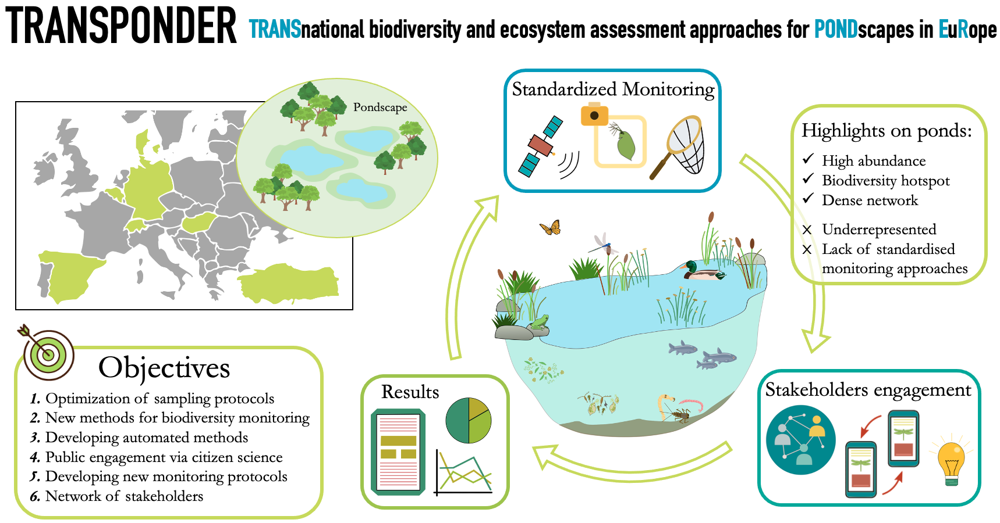
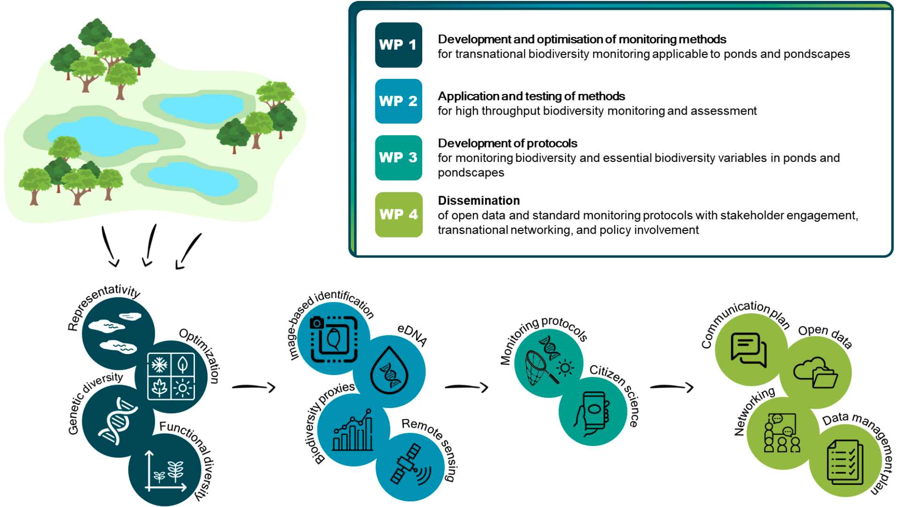

Maria Cuenca-Cambronero
Current Project: TRANSPONDER
TRANSnational biodiversity and ecosystem assessment approaches for PONDscapes in EuRope.
About the project
TRANSPONDER aims to improve our ability to assess biodiversity and ecosystem change in overlooked and valuable pond ecosystems by optimising tools and developing protocols for biodiversity monitoring (Fig. 1 - Graphical representation of the project). This involves establishing approaches to select sites for monitoring, standardising, and automating the monitoring procedures in a transnational context. It also aims to create a network for exchanging expertise and sharing expectations, and thus increase the impact of the project across a wide range of stakeholders and policy managers.
TRANSPONDER consists of four work packages (Fig. 2 – Different packages of the project): WP1 capitalises on existing data, targeted field work and novel methodological approaches across seven European countries to develop and optimise a standardised methodology to assess the biodiversity of ponds. WP2 focuses on how enhanced automation, fostering high-throughput analyses, can be integrated into assessments of pond biodiversity. WP3 focuses on developing generally applicable monitoring protocols. WP4 will engage stakeholders at both the regional and European levels, raising the profile of ponds and their key role in biodiversity conservation and policy.
As part of WP1, the Spanish team will focus on assessing the functional diversity of ponds, since functional diversity represents an important dimension of diversity, providing information on ecosystem functioning and resilience. The first approach will analyse the trait distribution patterns based on species-specific trait values found in the literature and targeted databases. Secondly, to assess the extent to which this approach accurately quantifies functional diversity, we will also directly quantify trait distributions from field samples by individual measurements of species from zooplankton and macroinvertebrates. Patterns of functional trait diversity can be related to species diversity indices and pond characteristics.


{kind=link}
{kind=link}
{kind=link}
{kind=link}
{kind=link}
{kind=link}